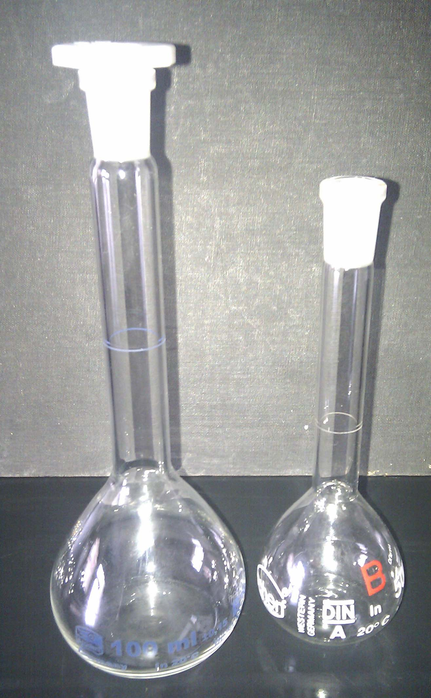

Formålet med dette kapitel er:
Atomer og molekyler er uhyre små. Derfor arbejder vi i praksis altid med meget store antal atomer eller molekyler. Hvis vi derfor skal angive et antal atomer eller molekyler, bruger vi enheden et mol. Et mol er simpelthen bare et (meget) stort tal. Faktisk så stort som 602.000.000.000.000.000.000.000. Dette store tal skrives lettere som 6,02·1023.
Man kan sammenligne et mol med begrebet et dusin der betyder 12, eller en snes der betyder 20.
I stedet for at sige vi har 6,02·1023 atomer, kan vi altså sige vi har et mol atomer. Har vi i stedet 12,04·1023 atomer, kan vi sige vi har 2 mol atomer.
En portion stof - fx en teskefuld salt - vejer et eller andet. Dette begreb kaldes masse. I daglig tale kalder vi det vægt, men det korrekte ord i kemi er masse. Masse måles i gram (g). Man betegner masse med bogstavet m. Har vi en portion stof der vejer 5 g, kan vi skrive: m = 5 g.
Forskellig atomer vejer forskelligt. Da atomer er meget små, er det upraktisk at angive massen af et enkelt atom. I stedet bruger man massen af et helt mol atomer (eller molekyler). Lad os først se på grundstofferne. I det periodiske system kan vi finde ud af hvad 1 mol atomer af et givet grundstof vejer. Hvis vi fx ser på stoffet jern (med atomsymbol Fe) finder vi tallet 55,85. Dette tal betyder at 1 mol jernatomer vejer 55,85 g. Vi kalder dette tal for stoffets molarmasse. Da tallet er massen af 1 mol stof, er enheden for molarmasse gram per mol (g/mol). Molarmasse betegnes med bogstavet M. For jern kan vi skrive M = 55,85 g/mol. Man kan i parentes angive hvilket stof der er tale om: M(Fe) = 55,85 g/mol. På samme måde kan man finde M(H) = 1,01 g/mol og M(C) = 12,01 g/mol.
Hvad nu hvis vi skal finde molarmassen for et molekyle? Lad os bruge methan, CH4, som eksempel. Vi skal altså finde ud af hvad 1 mol methanmolekyler vejer. Methanmolekylet er opbygget af 1 C-atom og 4 H-atomer. I 1 mol CH4-molekyler må der derfor være 1 mol C-atomer og 4 mol H-atomer. Massen af 1 mol CH4 må derfor være det samme som massen af 1 mol C og 4 mol H. Massen af 1 mol C er jo netop molarmassen for C. Vi kan derfor beregne molarmassen for CH4 som M(CH4) = M(C) + 4·M(H) = 12,01 g/mol + 4·1,01 g/mol = 16,05 g/mol.
Stofmængen angiver hvor mange mol af et stof vi har, og betegnes med bogstavet n. Hvis vi har 2 mol af et stof, skriver vi n = 2 mol. Stofmængde er altså et mål for hvor mange atomer/molekyler vi har.
Vi har nu tre begreber:
Disse tre størrelser hænger sammen. Hvis vi ved hvad 1 mol af et stof vejer (M), og vi ved hvor mange mol stof vi har (n), kan vi beregne hvad stoffet i alt vejer (m). Dette gøres simpelthen ved at gange molarmasse med stofmængde. Med formler:
m = n·M.
Vi fandt før ud af, at molarmassen for methan (CH4) er 16,05 g/mol. 2 mol methan må derfor veje det dobbelte, altså 32,10 g. Opskrevet med formler:
m = n·M = 2 mol·16,05 g/mol = 32,10 g.
Ofte er man i den situation, at det er molarmassen (M) og massen (m) man kender og stofmængden (n) der skal beregnes. Det kan også være molarmassen der skal beregnes ud fra det to andre. Det kan gøres ved at omforme sammenhængen mellem de tre størrelser:
m = n·M ⇔ ⇔ .
Eksempel: Vi kender M = 40 g/mol og m = 4,3 g og deraf beregne
.
| Oversigt | ||
|---|---|---|
| Størrelse | Forkortelse | Enhed |
| masse | m | g (gram) |
| molarmasse | M | g/mol (gram pr. mol) |
| stofmængde | n | mol |
| Formler | ||
| m = n·M | ||
I kemi arbejder vi ofte med stoffer der er opløst i vand (eller andre opløsningsmidler). Vi har derfor brug for, et mål for hvor koncentreret opløsningen er. Den mest almindelige måde at angive dette på i kemi, er at angive hvor mange mol af stoffet der er opløst per liter opløsning. Denne størrelse kalder vi stofmængdekoncentration (eller lidt mindre præcist: koncentration) og betegner med et c. Enheden for stofmængdekoncentration er mol/L (mol per liter). Hvis vi fx har 2 liter (L) opløsning af salt i vand, hvor der i alt er 0,5 mol salt, så svarer det til at der er 0,25 mol salt i hver liter opløsning og vi kan skrive c = 0,25 mol/L.
Generelt har vi:
Den generelle sammenhæng mellem de tre størrelser, er:
.
Eksempel 1: Vi opløser 0,16 mol stof i vand, så opløsningen i alt fylder 0,5 L, hvad er stofmængdekoncentrationen?
Vi beregner: .
Eksempel 2: Vi skal bruge en stofmængde på 0,30 mol fra en opløsning med en koncentration på 0,25 mol/L, hvor stort et volumen skal vi bruge?
Vi beregner: .
Vi får til opgave at fremstille 0,5 L opløsning af natriumhydroxid (NaOH) med en stofmængdekoncentration på 0,25 mol/L.
Vi kan dele opgaven op i to dele: for det første skal vi have udført nogle beregninger for at finde ud af hvor meget stof (NaOH) vi skal afveje, for det andet skal opløsningen laves i praksis.
Beregningsdelen først. Vi har opgivet V = 0,5 L og c = 0,25 mol/L. Vi kan så beregne stofmængden:
n = c·V = 0,25 mol/L·0,5 L = 0,125 mol.
Nu ved vi hvor stor en stofmængde vi skal bruge, men vi skal finde ud af hvad det vejer, da det er masse vi kan bestemme i laboratoriet.
Stoffets molarmasse kan vi finde via det periodiske system, hvor vi kan finde molarmasserne for Na, O og H. Vi beregner:
M(NaOH) = M(Na) + M(O) + M(H) =(22,99 + 16,00 + 1,01) g/mol = 40,00 g/mol.
Nu ved vi hvad 1 mol NaOH vejer, men vi skulle imidlertid kun bruge 0,125 mol, så vi beregner massen:
m = n·M = 0,125 mol·40,00 g/mol = 5,00 g.
Vi har nu udført de nødvendige beregninger og kan gå over til det praktiske.
De 5,00 g NaOH afvejes på en vægt.
En målekolbe med et volumen på 0,5 L fyldes ca. en tredjedel med demineraliseret vand og stoffet (NaOH) overføres til kolben vha. en tragt.
Der sættes prop på kolben og den rystes til al stof er opløst.
Derefter fyldes op med vand til målestregen. Der sættes igen prop på og der rystes igen.
Bemærk at det er hele opløsningen der skal fylde 0,5 L, dvs. der bliver i alt brugt lidt mindre end 0,5 L vand (da NaOH også fylder lidt).
